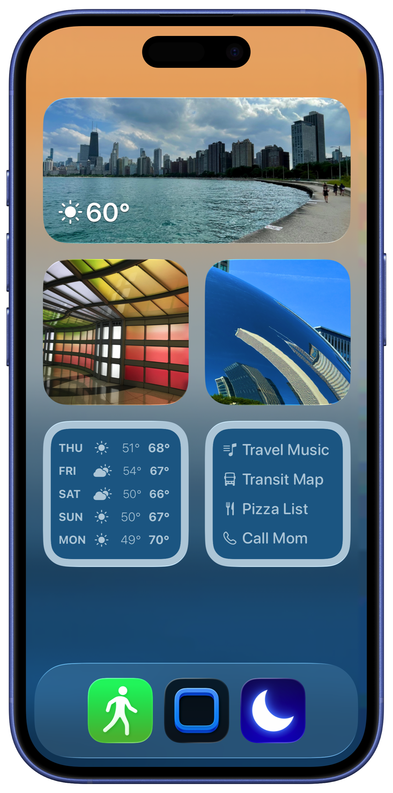
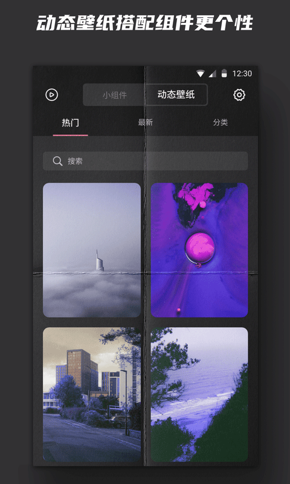

我怎么把 Widgetsmith 嵌进每天的晨间工作流：从三步切换到一眼扫完
以前通勤前要开日历、提醒事项、天气三个 App 才敢出门，现在用 Widgetsmith 把所有信息钉在锁屏和主屏上，再配一个 Shortcuts 一键打卡——整个流程省了至少两次手动切换。
以前的痛点：三个 App 来回切
我每天早上出门前固定要做三件事：看今天有没有会议、扫一眼待办清单最后一条、确认会不会下雨带不带伞。听起来简单，但以前是这样的：
先开日历 App 滑到今天，记下下午三点的产品评审；退出、开提醒事项，划掉昨晚睡前加的那条"买牛奶"，确认还有四条没完成；再退出、开天气 App，看看下午的降水概率——有时候还要下拉刷新一次才能拿到最新数据。三个 App 切换，手指在主屏上划来划去找图标，遇上 iOS 后台刷新卡一下的时候，光等加载就够喝半口水了。
更烦的是，锁屏上只能放两个小组件，日程提醒挤在一个小格子里根本看不全，解锁之后还是得一个一个点进去。
现在的流程：锁屏看一眼，主屏扫一屏
我把 Widgetsmith 插进了晨间信息整理的工作流里，整个链路变成了这样：
锁屏层放三个 Action 快捷入口，分别跳 Shortcuts 打卡、飞书日报、公司内部 wiki——锁屏直接点，不用解锁。
主屏层排好四列：最上面一行放一个 Large 尺寸的 Calendar 小组件，显示今天所有事件和时间段；第二行左边 Medium Reminders，列前三条未完成提醒，右边 Medium Weather，温度+降水概率+风力一览；最下面一行左 Small Moon Phase，看一眼今天的月相和下一次满月倒计时（我偶尔会拍月亮），右 Small 是天气图标小缩略图，不用点开也能扫一眼。

具体怎么搭起来的
Widgetsmith 的官网上有完整的模板库，我选的 Calendar 和 Reminders 都是现成模板改了配色就用了。Weather 也是内置类型，选好城市、调整一下显示项（我关掉了风速的数字太占地方）。
锁屏的 Action 是 v5 版本随 iOS 17 一起增强的功能——点一下就能跳 Shortcuts 或者直接拨电话。我第一个 Action 绑的是我自己写的 Shortcuts：读取 Widgetsmith 里已经刷新好的日程和待办，拼成一段晨间日报文本，自动发到飞书群里。这条链以前是我手动复制粘贴三次才能完成的事。
锁屏放 Action 的方法其实有个小坑：iOS 16 之后锁屏支持底部快捷栏，但 Widgetsmith 的 Action 默认在主屏，得手动切过去——锁屏长按进入 Customize，清掉现有的默认 Action，点加号选 Widgetsmith，再挑你建好的那个。我第一次搞的时候没找到入口，后来去Widgetsmith文档翻了一下才弄明白。
实操里最容易断链的两个环节
环节一：权限没开，小组件显示空壳
Widgetsmith 需要的权限比想象中多：日历、提醒事项、位置（给天气和太阳路径用）、照片（给 Photo 类型小组件用）。我第一次配 Reminders 小组件的时候出来的是个空壳，后来重新跑了一遍下载的安装包重装，进到设置里才发现 Reminders 权限被系统关了——不知道为什么，iOS 有时候会在重装之后把小组件的读取权限重置一遍。
解决方法就是去设置 → Widgetsmith，把日历、提醒、位置都手动打开一遍。装完或者更新 Widgetsmith 之后最好检查一下这块，免得小组件显示空内容浪费时间排查。
环节二：主题和壁纸不搭，视觉上像拼凑
Widgetsmith 7.3 上线之后新增了壁纸库和一键主题搭配，但我个人更喜欢用自己拍的照片当壁纸。Widgetsmith 有个 Generate Theme from Photo 的功能——编辑任意小组件的 Aesthetic，点右下角三个点，选 Generate Theme from Photo，挑一张自己的照片，它会从照片主色里自动提取 tint、background、border 三套配色。
这个功能解决了我以前手动调颜色的痛点：颜色选择器可以精确调 RGB 值，存 6 个自定义色之后所有小组件都能直接选，但手动调要一个个找色调。用照片自动生成之后，所有小组件的配色一次对齐，边框宽度我一般设 2px，Large 尺寸配纯色背景，有点海报感。

效果：省了什么，什么时候不划算
具体数字：以前晨间信息整理要开三个 App 加一次手动复制，大约 45 秒；现在锁屏看一眼加主屏扫一屏，大约 10 秒。少了两次 App 启动等待，省了一次手动复制粘贴——这些都是可数的，不是"大大提升效率"那种空话。
但这套流程不是什么场景都适用。如果你每天只有一个日程、两三条待办，那 Widgetsmith 搭起来花的时间可能比省下来的还多。另外 Premium 订阅里的潮汐数据、更多字体、星空图这些功能我没用到，如果你不需要天文类小组件，可以先不买订阅，免费版的核心信息显示已经够用了。
还有一个边界：Action 的黑屏是 iOS 机制限制的——点小组件触发 App 跳转的时候会有个一闪而过的黑屏，这不是 Widgetsmith 的 bug，FAQ 里解释过是系统要求小组件内交互必须经提供方 App 处理，属正常现象。
这套 Widgetsmith + Shortcuts + 飞书的组合是我目前晨间流程里最稳定的一条链。它不负责产生内容，但把分散在各处的信息集中钉在了桌面上——这件事以前要我手动做，现在 Widgetsmith 替我做了，我省下来的那 35 秒可以多喝一口咖啡。三个仓库都能拿到这套资料，感兴趣的可以翻一下对照着搭：GitHub、Gitee、GitCode。